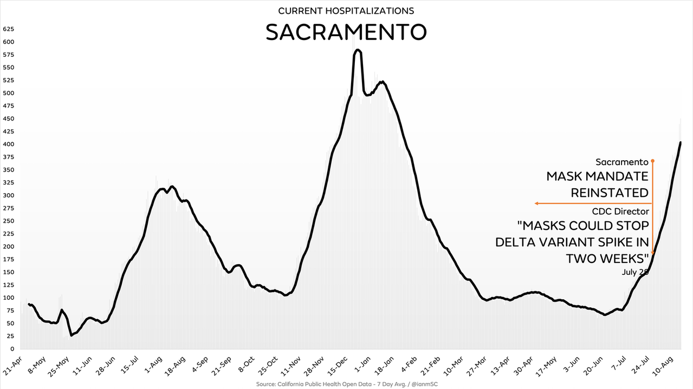
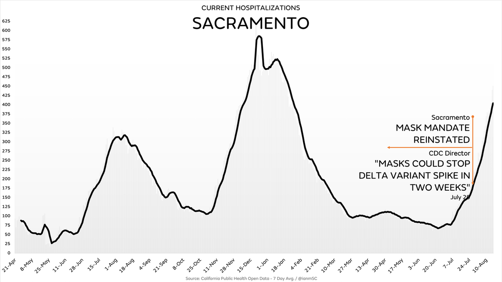

COVID-19
Published October 10, 2021
One must recognize the silent dissent of individuals with opinions that line the middle path between two more extreme sides. Perhaps it is hard to extrapolate ambivalence on taking immediate action due to the silent nature of ambivalence. As opposed to the vocal surety of actionable opinion, the silent and unactionable nature of ambivalence can be difficult to extrapolate in a loud forum. Ambivalence is not the modus operandi of an individual, but the embryonic state that may or may not eventually lead to confidence in action one way or the other. The passing of time will allow the truth to become more apparent just as rainfall moves garden soil to reveal previously buried trinkets and rubble. At every moment there is a risk to be calculated based on knowledge one has in the present moment. At each of these moments, one will cater to their well-being in a way that they find fit at the time. If one were to accuse me of having evolving beliefs, I would be guilty as charged. However, this is not equivalent to moving goalposts, as that implies that one party deliberately changes criterion in the middle of an ongoing event or process for the benefit of their perception, stance, or purpose as a means to fight against an opposing party with an opposing stance or purpose. An ambivalent individual who is open to change and new information is only concerned with what they can discern as sensible truth. There are no sides to fight for or against for the ambivalent individual waiting for more truths to be revealed. One can not look back and ridicule in entirety decisions that were taken in the moment, for it is unsound to anachronistically apply today’s knowledge to past decisions and beliefs. Furthermore, it is unsound to commit irreversible actions based on faulty generalizations, appeals to ignorance, and reliance on solely quantitative observations while disregarding all others.
The Virus
COVID-19 is not a viral pneumonia. It is a viral vascular endotheliitis.[1][2][3] COVID-19 is not just a respiratory disease - it can present itself in a vast array of conditions, symptoms, and complications.[4][5] It can precipitate multiple organ failure, including hypoxic and inflammatory damage to various vital organs, such as the brain, heart, liver, pancreas, kidneys, and intestines.[6][7][8][9][10][11][12][13][14][15][16][17][18] Common clinical features and laboratory findings covering symptoms, complications, comorbidities, and abnormalities are consistent with data mentioned herein and are being observed.[19][20]
As alarming as these serious conditions are, the vast majority of COVID-19 cases are mild and do not cause significant disease, let alone result in death.[21][22][23] The likelihood and severity of symptomatic infections of coronavirus, like any other communicable or non-communicable disease, is exponentially increased with the existence of one or more underlying medication conditions. Of hospitalized adults in the USA with coronavirus, 94.9% had at least 1 underlying medical condition. Essential hypertension (50.4%), disorders of lipid metabolism (49.4%), and obesity (33.0%) are the three most common conditions. Obesity is the strongest risk factor for severe COVID-19 illness even without being the most common underlying condition.[24] Obesity, which is associated with an increased risk of cardiovascular disease, diabetes, and kidney disease, all which increase susceptibility to developing pneumonia-associated organ failure, causes individuals to be five times more likely to experience ICU admission and twice as likely to experience respiratory failure compared with individuals without obesity.[25] CDC data show obesity as the most common underlying medical condition for all age groups.[26]
In the USA, there are ≥ 100 COVID-related deaths per 100,000 population, 67.9% adults are overweight with BMI > 25kg/m2, 36.2% adults are obese with BMI > 30kg/m2, ≥ 40% of adults have insufficient physical activity, and healthy adult life expectancy is 66.1 years.[27] Obesity is major contributing factor in non-communicable diseases, mental health illness, and spreadable viruses. Obesity not only increases the likelihood of susceptibility to disease. Obese individuals experience more severe symptoms and have been shown to remain, on average, contagious for influenza for a 50% longer period of time than individuals who are not obese.[28]
In the USA, 16% of the population is ≥ 65 years old, but 80% of all COVID-19 deaths are from that age group.[29] The percentage by state varied between 70% to 94%. When one considers the factors of physical health, mental health, and age with consideration to susceptibility of diseases it should come as no surprise that COVID-19 mortality mirrors the natural mortality curve.[30]
Death Counts and Comorbidities
How do comorbidities and underlying conditions contribute to counting of deaths? CDC director Robert Redfield acknowledged in July 2020 to House Select Subcommittee on the Coronavirus Crisis that coronavirus death numbers are inflated due to hospital reporting – similar to initial reporting during the HIV epidemic.[31] Dr. Ngozi Ezike, the director of Illinois's Department of Public Health, has stated: “If you died of a clear alternate cause, but you had covid at the same time, it’s still listed as a covid death."[32] This all seems in line with WHO which has, since February 2020, qualifies coronavirus deaths even if only suspected or probable at the time of death.[33]
Luckily for hospitals, listing COVID-19 as the cause of death, even if it was only a comorbidity or not even a symptomatic case, grants them more in reimbursement money. The CARES Act, which became public law on March 27, 2020, increases reimbursement by twenty percent to Medicare recipients and uninsured patients infected with coronavirus.[34]
The USA is not the only country counting this way. Walter Ricciardi, scientific adviser to Italy’s Minister of Health, has stated that Italy’s death rate may appear high because of how doctors record fatalities. “The way in which we code deaths in our country is very generous in the sense that all the people who die in hospitals with the coronavirus are deemed to be dying of the coronavirus [...] On re-evaluation by the National Institute of Health, only 12 per cent of death certificates have shown a direct causality from coronavirus, while 88 per cent of patients who have died have at least one pre-morbidity - many had two or three," he says.[35]
COVID-19 Shots
A vaccine is assessed by its efficacy – the extent to which it reduces risk of disease under controlled conditions – and its effectiveness – the observed reduction in risk after the vaccine is put into use.[36] The vaccines for COVID-19 are not sterilizing and do not prevent infection or transmission.[37] They are "leaky" vaccines - this means they remove the evolutionary pressure on the virus to become less lethal. Due to the reduced evolutionary pressure on COVID-19 variants, individuals who have taken a leaky vaccine are more of a threat to unvaccinated individuals by not allowing the virus to follow a natural evolutionary path. Taking a leaky vaccine only makes that individual less prone to death (temporarily, with declining efficacy) at the risk of all other individuals that are continually exposed to a virus that has no evolutionary pressure to become less lethal.[38][39]
Proper vaccines that provide long-lasting immunity (see below section "Semantics" on the wavering definitions of these words) such as the vaccine for polio etc are not leaky vaccines. Two doses of inactivated polio vaccine (IPV) are 90% effective or more against polio; three doses are 99% to 100% effective and will last years.[40] In contrast, within a 6-month time frame study, Pfizer effectiveness against symptomatic illness falls ~3% every month.[41] In a November 2020 paper published in Health Affairs in November 2020, soon-to-be CDC Director Rochelle Walensky and her co-authors showed that the effectiveness of COVID-19 vaccines would be strongly affected by the speed with which the vaccine is produced and administered, logistical challenges such as the need for ultra-cold storage or the requirement of two doses, the willingness of individuals to receive the shots in a timely manner, and the severity of COVID-19 when the vaccines would be introduced.[42] In stark contrast, polio was eradicated in USA over the course of half a century on the same vaccine.[43] Polio is a much more stable disease compared to the flu, but the comparison for vaccines must be made to provide perspective.
Infectiousness, Face Masks, Social Distancing, and Lockdowns
Asymptomatic or presymptomatic individuals infected with influenza do not transmit the disease with any statistical importance.[44] Likewise, asymptomatic carriers of COVID-19 have a less than 1% chance of infecting people within their household.[45] Current measures taken to prevent transmission of aerosolized viruses from an infected individual to another individual are outdated and insufficient. 6-foot social distancing was first proposed in 1897 by bacterialist Carl Flügge.[46] A 1947 study found that droplets can travel 9.5 feet away.[47] A 2016 study found that droplets from an indoor sneeze can travel up to 26 feet.[48] A 2020 study found that a minimum of 15-foot distance would be necessary to be statistically effective against transmission.[49] In a 2020 review of 10 studies, 8 of 10 of those studies found that respiratory droplets travel over 6 feet.[50]
The overall infection-induced SARS-CoV-2 seroprevalence estimate increased from 3.5% (95% CI, 3.2%-3.8%) in July 2020 to 20.2% (95% CI, 19.9%-20.6%) in May 2021; the combined infection- and vaccination-induced seroprevalence estimate in May 2021 was 83.3% (95% CI, 82.9%-83.7%). By May 2021, 2.1 SARS-CoV-2 infections (95% CI, 2.0-2.1) per reported COVID-19 case were estimated to have occurred.[51][52] Simply stated, the vast majority of the USA has natural or vaccine-induced immunity to current COVID-19 variants.
Face masks offer little to no protection for the general population or health care workers.[53][54][55][56][57][58][59][60] This includes surgical masks.[61] Cloth masks may only reject 3-12% of particles and may increase infection risk by retaining moisture.[62][63] Furthermore, there is no association between reduced infection risk and mask mandates.[64][65] See below for a comparison between counties, states, countries, and regions that reinstated their original mask mandate with those did not reinstate the mask mandate with regards to case counts and hospitalizations.
 

Children
The CDC found no statistically significant difference of transmission rates between schools that required mask use and schools that had optional mask use.[66] Children are less likely to have severe disease from coronavirus, are less symptomatic when infected, and have lower contagiousness as a result.[67] Negating long-term effects of a COVID-19 infection ("Long COVID"), a study of 1,560 adolescents found “no statistical difference comparing the reported symptoms between seropositive students and seronegative students.”[68] These findings are uplifting, but the CDC's choice to continue a campaign promoting wearing-masks in schools not being backed by their own scientific conclusions is frivolous. With varying age cutoffs, the U.K., Ireland, Scandinavia, France, the Netherlands, Switzerland, and Italy do not mandate masks in classrooms. There is no data to show that there were more outbreaks in these countries when compared to the USA, where mask mandates and remote learning were prevelant since March 2020. Indeed, the WHO's largely hands-off child-masking guidance differs from the CDC’s recommendations despite access to the same data.[69][70] The decision to mask students carries with it potential academic and social harms for children and may lack a clear benefit.
It is admittedly hard to act as justly as possible when making decisions for children. Children are politically powerless and cannot undo any choices made unto them. For example, utmost caution must be used in the testing of drugs and shots for children, notwithstanding evaluating the necessity and risks of even administering these drugs and shots. On average, administered drugs have longer half-life in infants than adults, but children 6 months to 12 years have more rapid half-life than adults.[71] More easily stated, a half-life of an administered drug has very high variability even among closely related drugs that share same metabolic pathways between different age groups.
It is extremely crucial to children's development to be able to read faces and recognize social cues. Recognition of facial emotion reaches levels of adults by age 11, with vocal emotion recognition continuing to develop into late childhood.[72] Implications of face masks for babies have been noted; practices that walk the line between wearing masks and being maskless are employed to promote facial recognition.[73]
See below for CDC data that show that children are more likely to die from drowning, vehicle accidents, homicide, cancer, cardiovascular disease, and flu/pneumonia by varying degrees of multitude.
Semantics
Perhaps the words presented thus far do not mean what I believe they mean to you, or vice versa. Two individuals using the same words in a conversation are likely to employ entirely different definitions of topical words without the other realizing it. The following varying definitions are presented for the purpose of recognizing the complexity of having even attempted to address areas of this multi-faceted topic. What is a vaccine? What is a pandemic? What is immunity?
CDC definition of vaccine, February 2011.[74]
CDC definition of vaccine, July 2015.[75]
CDC definition of vaccine, August 2021.[76]
CDC definition of vaccine, September 2021.[77]
Going by the CDC's September 2021 definition for vaccine, a nice home-cooked meal of collards+onions+garlic, sweet potato+cinnamon, and rice+lentils administered by mouth would qualify as a vaccine, for it would surely stimulate the body’s immune response against diseases.
WHO has never formally defined what a pandemic is (the organization has only provided descriptions of pandemics) and has only defined pandemic phases. Even as such, what can be readily interpreted as a definition of a pandemic as stated by the WHO in 1999 include factors such as mortality and morbidity (virulence, rate of incidence). By 2005 serious mortality and morbidity were removed from their description of pandemics.[78] Tuberculosis is also classified as a pandemic without measures for mortality and morbidity.[79]
WHO definition of herd immunity, June 2020.[80]
WHO definition of herd immunity, October 2020.[81]
WHO definition of herd immunity, December 2020.[82]
Personal Viewpoints
Without even having addressed coronavirus as it relates to morality, liberty, politics, and justice, the information presented heretofore, as of the publication date, supports: my viewpoint of remaining ambivalent in the midst of new information, changing information, and misinformation; my cautious and patient approach to let truth be presented more clearly as time goes by, for one does not know what may happen in the future based on today's information; my decision to not receive COVID-19 shots based on my BMI, diet, activeness, age, medical history, the shortening effectiveness of COVID-19 shots, and the waning efficacy of COVID-19 shots; my opposition for lockdowns, social distancing, and mask-wearing due to repeated studied ineffectiveness; my viewpoint that babies, children, and teenagers on the whole do not benefit from receiving COVID-19 shots, wearing masks, or social distancing (and that wearing masks would hinder social development in babies and children at a pivotal developmental stage of life with no benefit in return); my viewpoint that what is counted as a COVID-19 death, what a vaccine is, what a pandemic is, and what immunity is are too heavily blurred and distorted to even be able to discuss coronavirus on a large scale with great understanding, which makes sweeping generalizations quite sharp to the nuanced individual; and my support for individuals to get COVID-19 shots who: are obese, have heart complications, have blood diseases, are over the age of 60, have a sedentary lifestyle, abuse drugs, and/or genetically have heightened susceptibility to viruses and diseases.